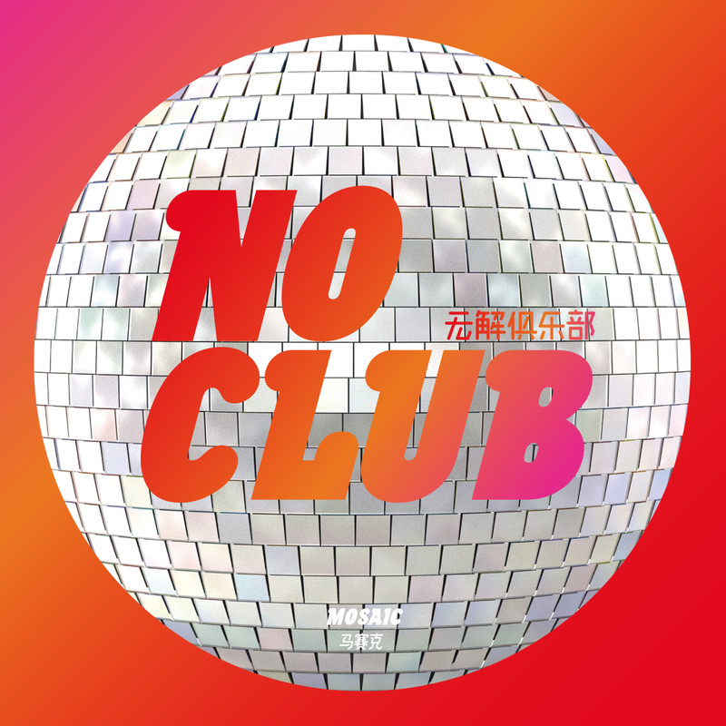

×
"Hi, my name is Victoria! I've fallen in love with many Chinese rock bands and songs lately.
It's amazing how you can hear a song in a familiar language, try to understand it, and still love it all the same.
This website introduces some popular Chinese bands from the 1980s, 1990s, 2000s. I hope you can find something that you love!"
(all images and info from wikipedia and spotify)
BEYOND
1983
BEYOND乐队
Beyond was a Hong Kong rock band formed in 1983. The band became prominent in Hong Kong, Taiwan, Japan, Singapore, Malaysia, Mainland China, and Overseas Chinese communities. The band is widely considered as the most successful and influential Cantopop band from Hong Kong. In 1993, leader Wong Ka Kui, died at the age of 31 after an accident during the filming of a show at Fuji Television in Tokyo. Beyond continued to perform and record after Wong Ka Kui's death. In 2005, the remaining members Paul Wong, Wong Ka Keung and Yip Sai Wing decided to pursue their own solo careers, and Beyond officially disbanded.
Black Panther
1987
黑豹乐队
Black Panther (Chinese: 黑豹; pinyin: Hēi Bào) is a seminal Chinese rock band founded in 1987. It was originally fronted by one of China's alternative music pioneers Dou Wei. The band reunited and released a new album in 2013. "Who We Are", was produced by Jamii Szmadzinski. The band's best known songs include "Don't Break My Heart", "Shameful"《无地自容》, "Mirage"《海市蜃楼》, "I'm Afraid Of Your Crying"《怕你为自己流泪》, "Spirit Of Light" 《光芒之神》， "No Right, No Wrong" 《无是无非》，"Our Generation" 《我们这一代》, "Without you"《没有你》, "I Don't Want To Say Goodbye" and "Lonely Soul"《孤独的灵魂》 etc.
Tang Dynasty
1989
唐朝乐队
Tang Dynasty (Chinese: 唐朝; pinyin: Táng Cháo) is a Chinese rock band formed in 1989. They are often credited as being the first Chinese heavy metal band. Singer and rhythm guitarist Ding Wu, bassist Zhang Ju, and Chinese-American guitarist Kaiser Kuo co-founded Tang Dynasty in early 1989.[1] Kaiser left shortly after to return to the United States. Liu "Lao Wu" Yijun took his place and, according to Kaiser, went on to become China's first "guitar hero." In 1991, the band released its metal/rock version of "The Internationale" in Chinese.
New Pants
1996
新裤子乐队
New Pants (Chinese pinyin: xinkuzi yuedui) is a Chinese pop-punk band. Established in 1996, New Pants has become one of the most representative bands influenced by New wave in China. Current band members are: Peng Lei (vocal), Pang Kuan (keyboard), Zhao Meng (bass) and Hayato Kitō (drum). In 2019, New Pants has participated in a variety show called "The Big Band" of the iQiyi and won the championship (Hot 1).
Muma
1998
木马乐队
Muma (Chinese: 木马), founded in 1998, is a Chinese mainland rock band, composed of lead singers Muma, bass player Cao Cao, drummer Hu Hu, keyboard Feng Lei, guitarist Deng Liyuan. In 2004, Muma won the 4th Pepsi Music Award for Best Rock Band of the Year with the EP "Yellow Star". On June 12, 2020, Muma officially regrouped and released their single "Clouds From aFar", and in July, they took part in the second season of the “Big Band” on iQiYi.
Miserable Faith
1999
痛仰乐队
Miserable Faith is one of the most influential premier rock bands in China, who has released eight albums and EPs since 1999. They are widely celebrated for performing at hundreds of domestic and overseas live shows at various music festivals and live houses. As one of the rare rock powers that has always maintained a vigorous innovative vibe and finally achieved transformation, they have always been staying at the front line of Chinese rock world.
Mosaic
2008
马赛克乐队
Mosaic, founded in 2008, is a Chinese mainland rock band, composed of lead singer Xia Ying, guitarist Zhuo Yue, bassist Lin Yufeng, drummer Gao Xin (a total of 4 people). In 2015, Mosaic was invited to the prestigious Asian music festival "Summer sonic"; In 2018, Mosaic released its third studio album, "Dancing with the Stars," which produced most of the songwriting and choreography, and collaborated with Liu Zhuohui, a well-known Hong Kong native, on the Cantonese song "A Thousand Cups Not Drunk." In July 2020, he took part in the second season of the musical variety show "The Big Band."

Wutiaoren
2009
五条人乐队
Wutiaoren (Chinese: 五条人, Pinyin: wu tiao ren) is a folk band from Hai Feng, Guangdong Province, China. A great amount of their music are written and sung in Haifeng dialect and give the audience and listeners a sense of “plastic.” In 2020, Wutiaoren has participated in a variety show called "The Big Band Season 2" of the iQiyi and won the second place (Hot 2).
No Party For Cao Dong
2012
草东
没有派对
No Party for Cao Dong (Chinese: 草東沒有派對) is an indie rock band from Taiwan consisting of Wood Lin (vocals and guitar), Chu Chu (guitar), Sam Yang (bass), and Fan Tsai (drums). Band members had been friends throughout high school and university, then they founded the band on the eponymous Caodong Street in Shilin District, Taipei. In 2015, the band self-released an EP which sold out in a single day. They released their first studio album, The Servile, a year later in 2016. The band played at SXSW and NXNE in 2019. They wrote and recorded the title song for the video game Devotion by Red Candle Games in 2019.